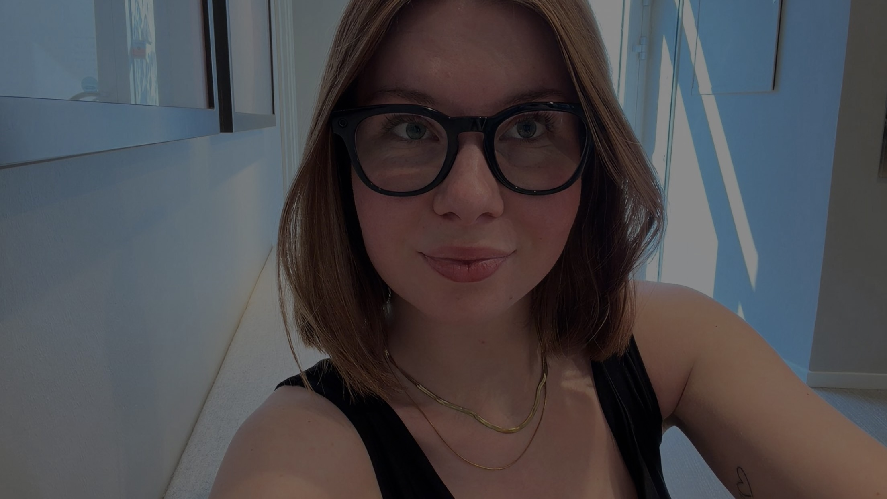

Hvem ejer dine data?
Hver gang du er online, efterlader du spor. Men hvem har adgang til dine oplysninger?
Læs mere →Tanker om teknologi, privatliv og de valg, vi træffer hver dag.
Læs seneste indlæg →
Smarte briller kan filme, tage billeder og give dig information i realtid. Men hvad betyder det for dit privatliv og andres ret til ikke at blive optaget?
Læs indlægget →Hver gang du er online, efterlader du spor. Men hvem har adgang til dine oplysninger?
Læs mere →Det er ikke tilfældigt, hvad du ser. Algoritmer påvirker dit indhold og dine valg.
Læs mere →Vi er online næsten hele tiden. Men hvad gør det ved vores fokus og trivsel?
Læs mere →
Hvem giver du egentlig adgang til dit liv online?
Hvilke digitale vaner har du – og er de gode for dig?